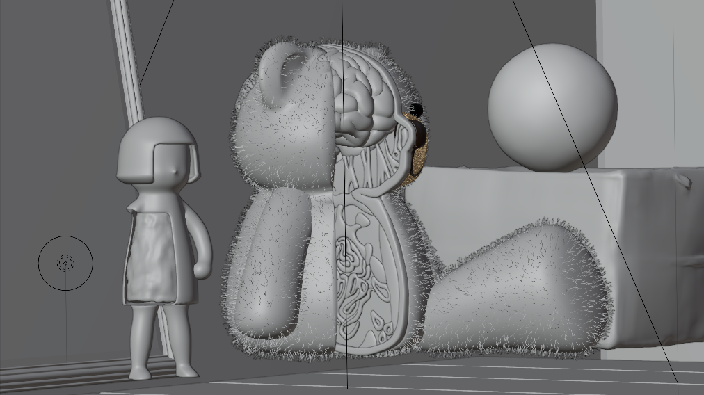

Expérimentation de réalisation 3D, le projet Surréel a pour objectif de réaliser une image qui tend vers le photoréalisme, tout en évoquant un univers étrange et surréaliste. En collaboration avec Manon Hoarau.

Après réflexion sur nos envies de réalisation, nous avons décidé de créer un univers dérangeant, jouant sur le décalage entre l'innocence du jouet et le cru des organes. Nous avons modélisé la poupée et l'ours en peluche, ainsi que l'ensemble du système organique interne de ce dernier. Ceux-ci se retrouvent oubliés dans un vieux grenier mis en scène par quelques objets abîmés, figés dans le temps, à la limite de la vie.
Le travail de texture joue sur le contraste entre la luisance des organes et les textures artificielles de plastique et fourrure des jouets. La lumière rose, étrange dans ce contexte, participe au dérangeant de la scène.
Peur du noir est un projet d'animation 3D sur le thème de l'angoisse. Nous avons travaillé avec Emma Fusillier à réaliser une suite de salles étranges, perturber le spectateur en l'enfermant dans une boucle sans fin... Projet en cours